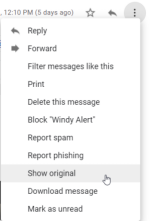

Phishing
How to discover Phishing EmailWe have to check the
Headers of the email and check if they are suspicious, to do that(in Gmail):
Below we have a some suspicious Headers:
•
Return-Path: See if the email address in this entry matches the email address in the From: entry. They
typically will not match for mass emailers like advertisers or spammers. The Return-Path: email address is used when
an email cannot be delivered to its recipients, and it “bounces back”. Spammers don’t want all the undelivered email
to end up in their inboxes!
•
Reply-To: See if the email address in this entry matches the email
address in the From: entry. When you hit reply to an email, the Reply-To entry is used to populate the recipients’
email. If it is different, you may accidentally send your reply to someone else.
•
X-Distribution:
if this field’s value is bulk. This indicates bulk/spam email.
•
X-Mailer: field indicates the
email client. If it includes weird names, be suspicious.
• Bcc or X-
UIDL: entries exist. This is a
sign of poorly crafted header. They are never in normal emails!
•
X-Spam score,
X-Spam flag and
X-Spam status entries help determine “spamminess”. But the scores are not
standardized across servers so these have to examine on a case by case basis.
Bibliography:
•
https://mlhale.github.io/nebraska-gencyber-modules/phishing/email-headeranalysis/